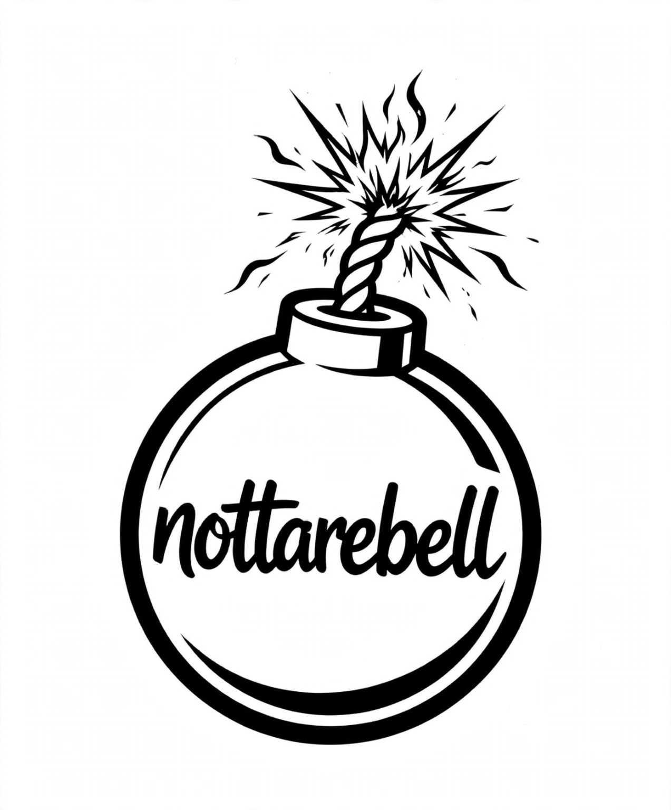
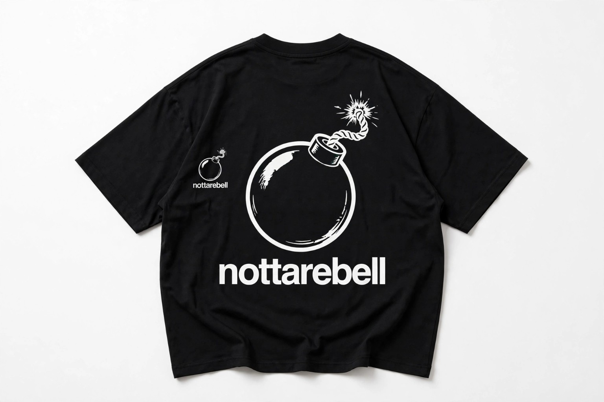
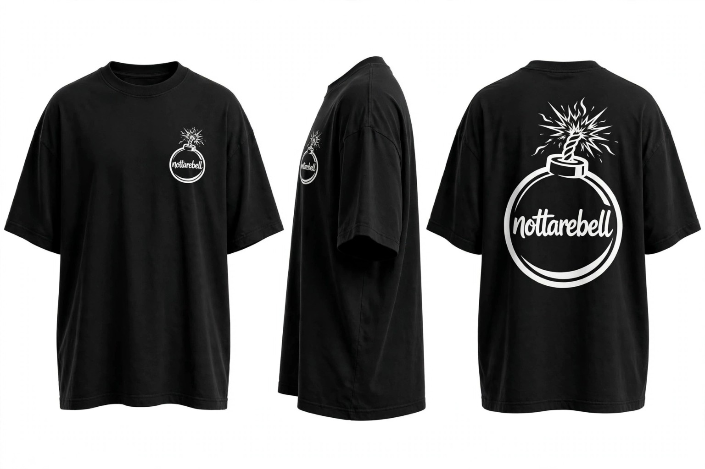
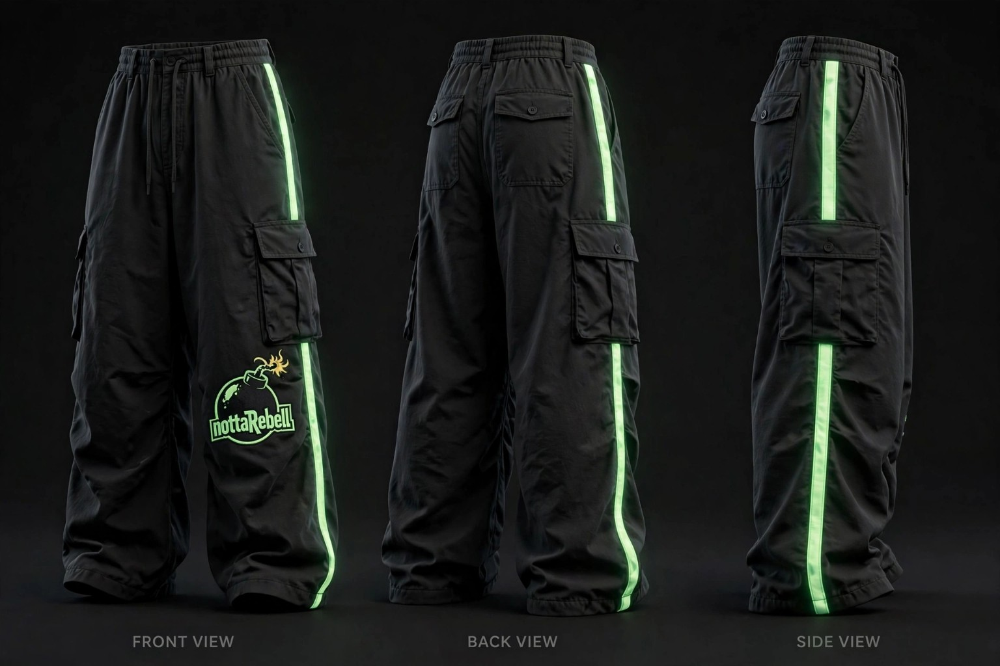
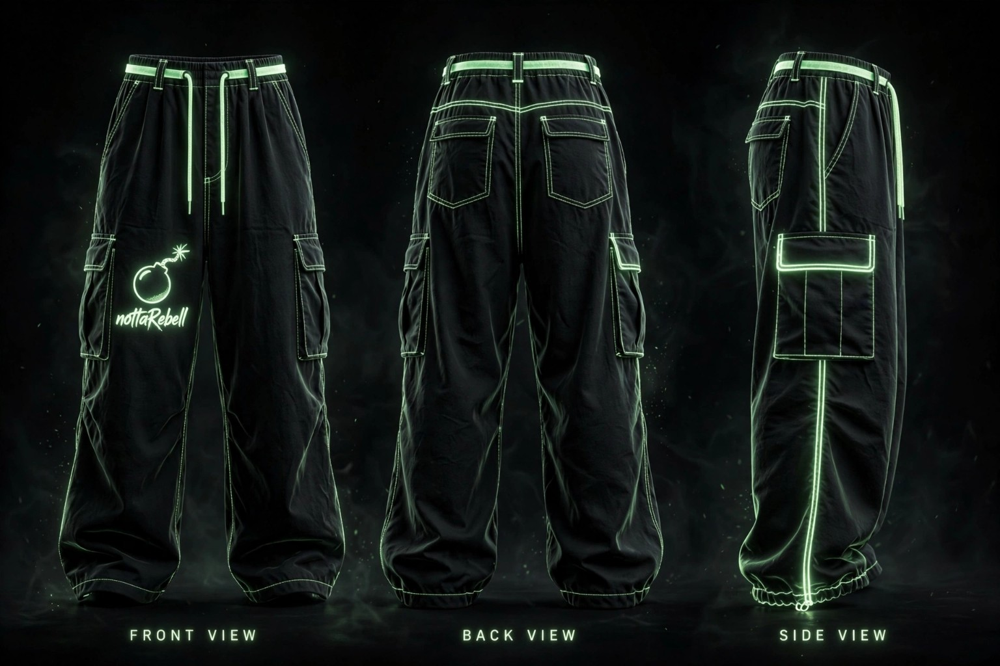
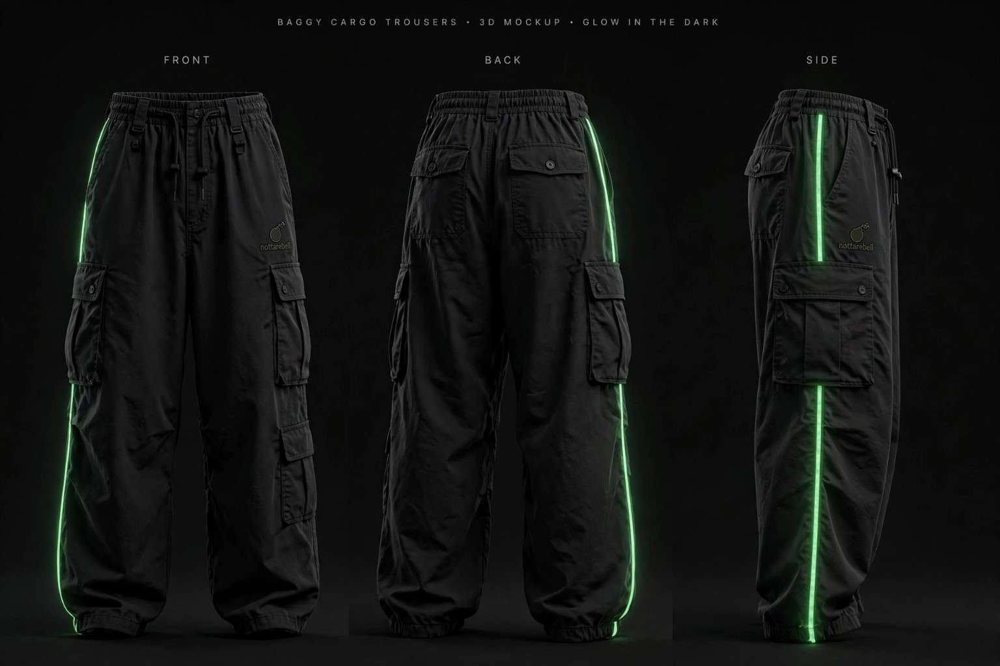
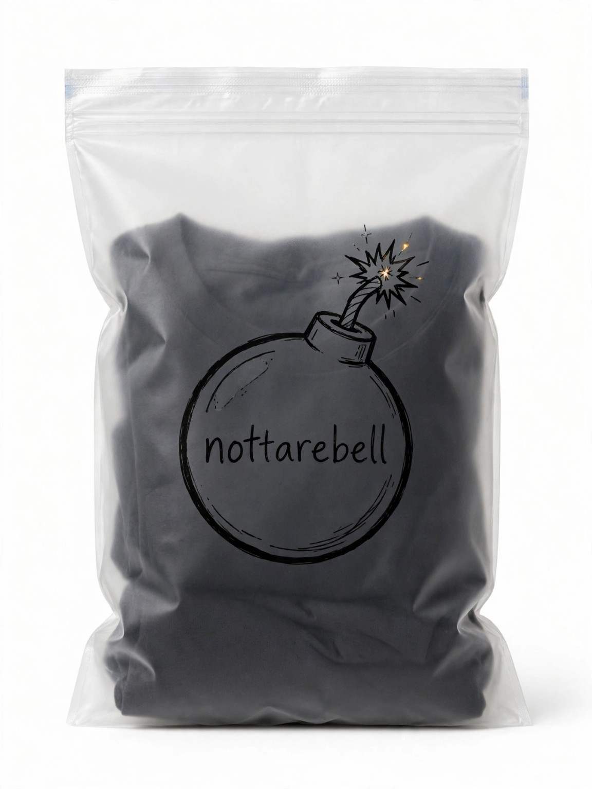

About David
David Nana Krah Okrah is a Ghanaian entrepreneur and the CEO of Brench Restaurant and Nottarebel Streetwear.
He is interested in basketball, writing and creating. His story is shaped by ambition, creativity and the determination to keep moving forward even when life becomes difficult.
My Story
I was born on 5 September 2008. In 2022, when I was 13, I lost my mother. That experience left me deeply demotivated and made reality feel very difficult for a while. But I knew that staying there would not get me anywhere. I chose to keep going, keep creating and keep building.
I am one of five brothers. My family and my experiences have helped shape the person I am becoming.
The Brench idea began in 2014 and was brought into reality in 2026. David leads the venture as CEO.
Nottarebel Streetwear is a creative streetwear venture built around its own identity and style.
David believes the brand stands on its own terms and wants Nottarebel to become recognizable for its designs and identity.
Nottarebel

Nottarebel is David's streetwear brand, with clothing concepts including graphic T-shirts, cargo trousers and branded packaging.
The gallery below shows selected Nottarebel samples and the brand logo.
Nottarebel Collection







Education
David attended Mfantsipim School and completed his studies in 2026.
Interests
🏀 Basketball
David has a strong interest in basketball and enjoys the game.
✍️ Writing
Writing is one of David's creative interests and a way he expresses ideas.
💡 Creating
David enjoys turning ideas into things that can exist in the real world.